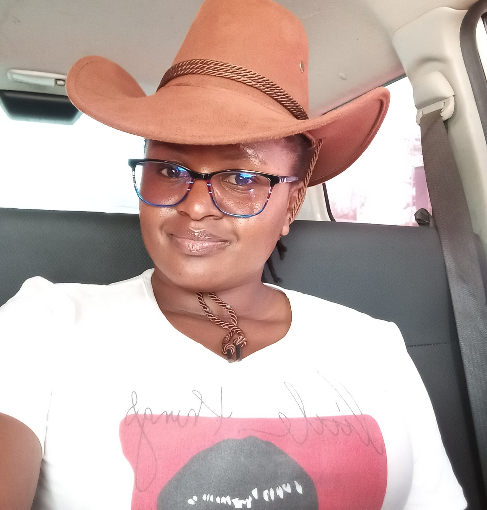

My name is Innoncenceia kakan
I have done the projects during my first week in class,
and I can see alot of improvement from when we started till this day
The following is the list of projects
This was an intoduction to html and how to use it to publish a webpage. Full html language
Here i was introduced to inserting images to my webpage,
listing them in orderly and unorderly manner
I have a diploma in Telecommunication Engineering from Technical University of Mombasa.
I have not been priviledged to dircetly work as per my career but life has made me get experience in a different way.
Programming challenges your way of thinking and getss you interested on how to solve problems using computers. This was in-line with my interest in changing the world through technology, by being able to solve critical challenges
My hobbies and interests are: